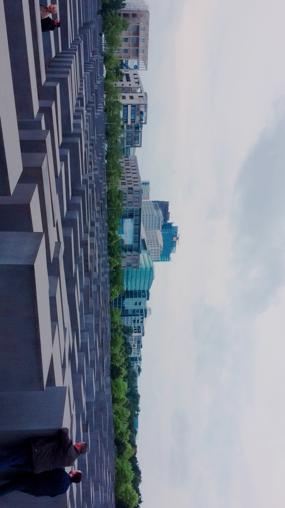
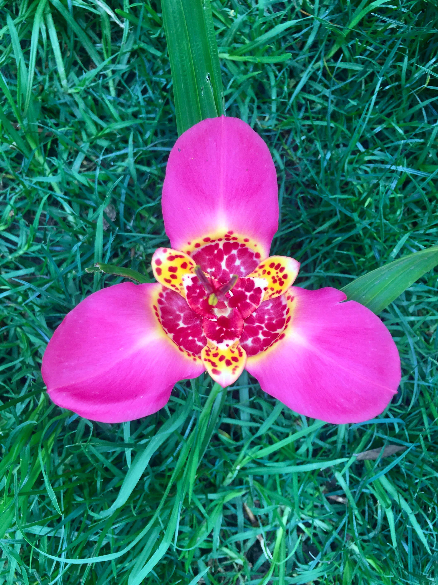
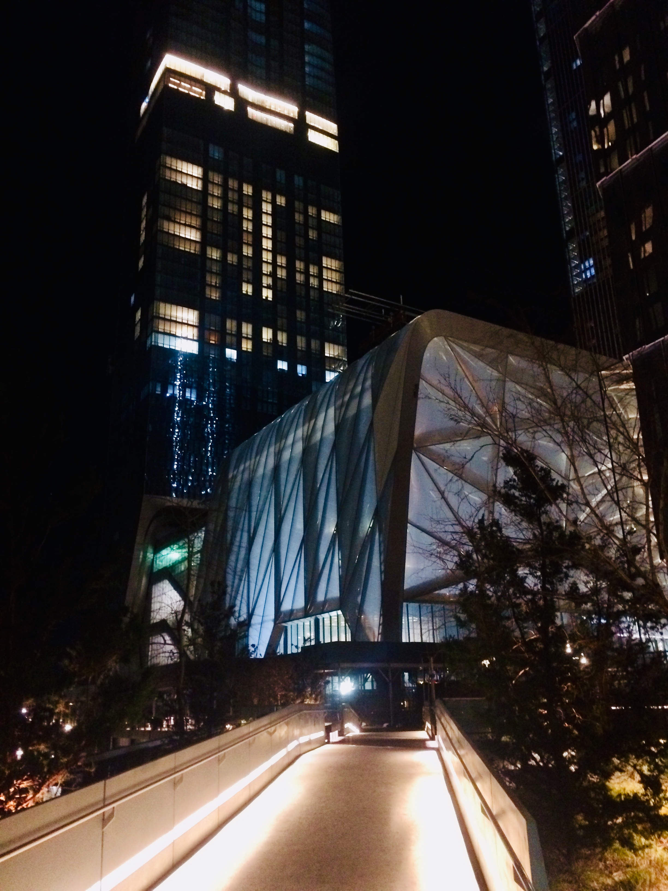
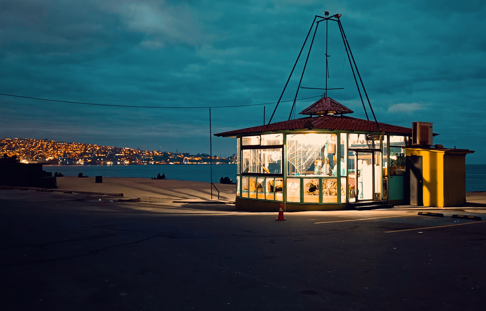
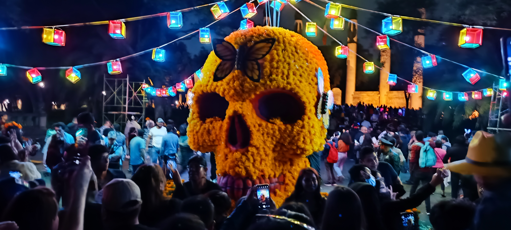
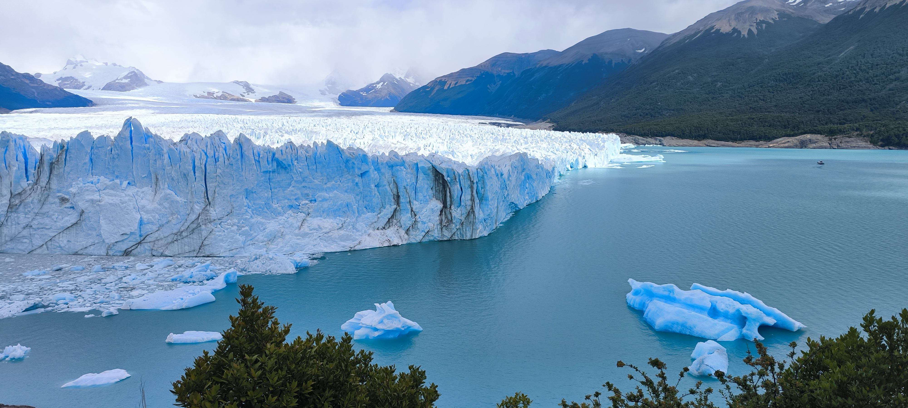
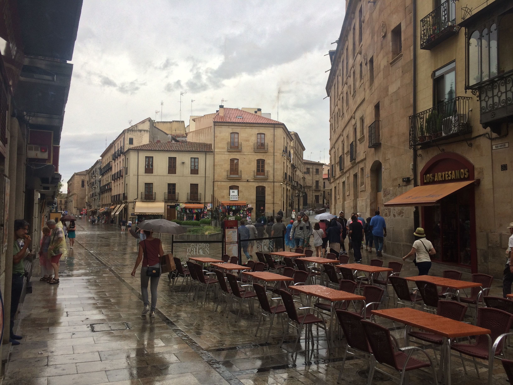
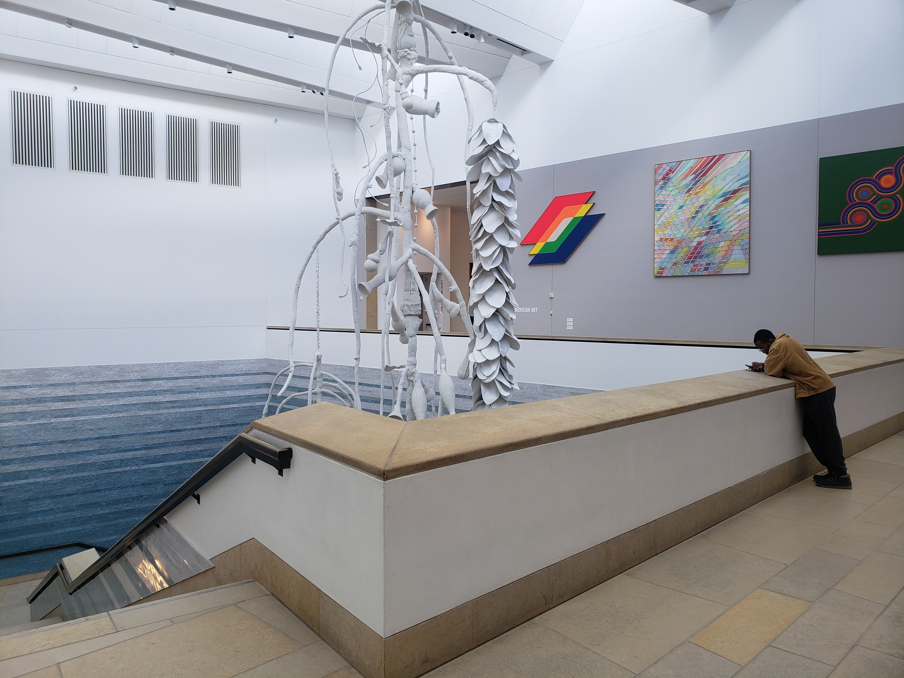
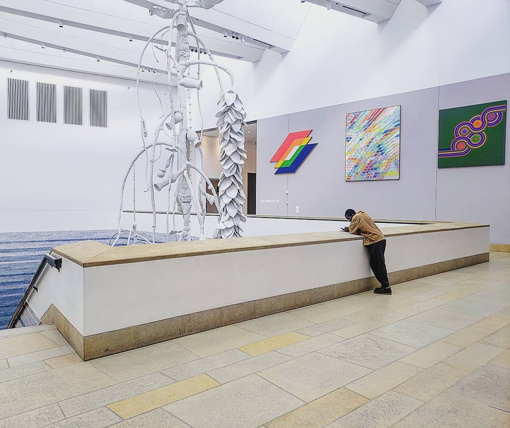
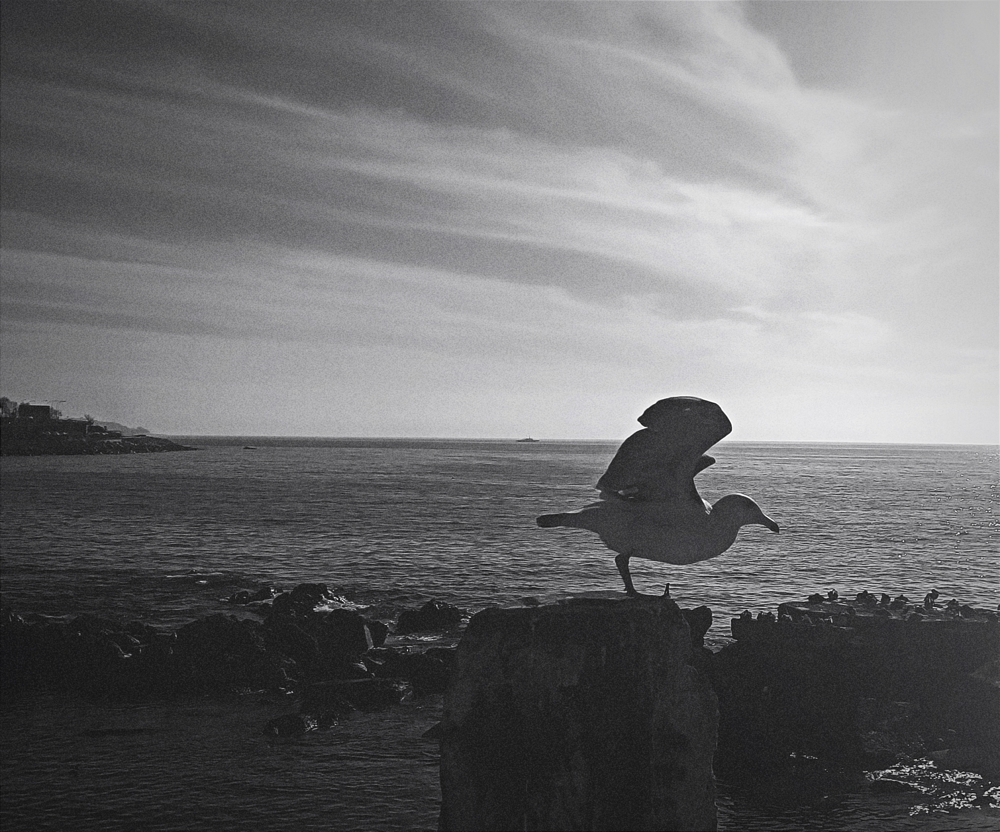

Fotografía
Una selección personal de fotografías de viajes, arquitectura, naturaleza y vida cotidiana.

Holocaust-Mahnmal
Berlín, 2017

Tigridia: La flor de un día
Jardín doméstico, 2025

The High Line
New York City, 2018

Costa de Valparaíso
Región de Valparaíso, Chile, 2023

Día de Muertos
Ciudad de México, 2022

Glaciar Perito Moreno
Patagonia, Argentina, 2025

Salamanca
España, 2017

Blanton Museum of Art
Austin, Texas, 2019

Buenos Aires
Argentina, 2024

Bogotá
Colombia, 2024

Costa de Valparaíso
Región de Valparaíso, Chile, 2023